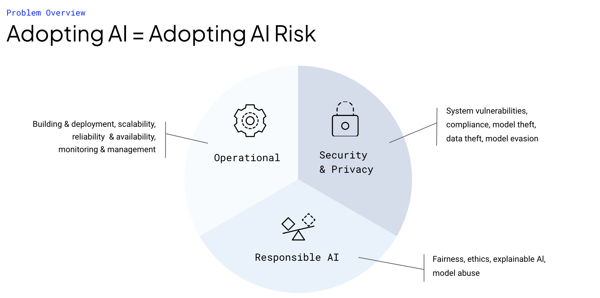

What is Robust Intelligence?
Welcome to Robust Intelligence, the solution for maintaining AI integrity. The platform helps you identify and eliminate the risks inherent to production AI by integrating into your AI pipeline.
AI risk refers to the potential negative consequences of using AI models in production, including operational, ethical, and security risks. Operational risks can arise from subpar model performance, while ethical risks stem from model behavior that violates regulatory or governance standards. Security risks occur when models are vulnerable to adversarial actors who try to exploit or compromise the model’s performance.
Robust Intelligence allows users to test and monitor their models for these three risk categories by integrating into two points in the model development and deployment pipeline.
To address these risks, Robust Intelligence offers two key features. During model development, AI Stress Testing measures the robustness of your model by running dozens of pre-configured tests. Each test checks the model’s vulnerability to a specific form of potential failure in production. During production deployment, AI Continuous Testing monitors your model and alerts you to issues such as data drift and detected adversarial attacks. In the event of a problem, our platform also offers automated root cause analysis to help you quickly identify the underlying issue affecting model performance.
What is AI Risk?
In modern engineering organizations, data scientists and machine learning engineers typically invest a significant amount of effort into the development stage of the model life cycle, which includes tasks such as data ingestion and cleaning, feature extraction, and model training. During this stage, models are evaluated mainly based on their performance on clean test data.
While these metrics may be useful in controlled development environments, deploying models in production introduces a new set of challenges and risks that are often overlooked. Once a model is deployed, data scientists lose control over how the model is used and how data is passed into it. Moreover, they have no oversight over the data pipelines that incorporate the model. Even when the model is used correctly, the real world can change, leading to issues like distributional shifts in production data, which can silently degrade model performance.
These risks can manifest in several ways, such as operational, ethical, and security risks. Operational risks arise from subpar model performance, which may occur due to factors such as data drift or other distributional shifts in the production environment. Ethical risks occur when model behavior violates regulatory or governance standards, which may lead to legal or reputational harm for the organization. Finally, security risks arise when models are vulnerable to adversarial actors who can exploit or compromise the model’s performance.
To mitigate these risks, it’s crucial to have tools like Robust Intelligence that allow you to test and monitor models continuously throughout their lifecycle, from development to deployment. This ensures that you catch any issues as they arise and can take corrective action before they cause significant problems.
Key Machine Learning Tasks Covered
Robust Intelligence provides model testing across the following broad task categories:
Tabular
Binary Classification
Multiclass Classification
Regression
Learning to Rank
Natural Language Processing (NLP)
Text Classification
Named Entity Recognition
Natural Language Inference
Fill-Mask Modeling
Computer Vision (CV)
Image Classification
Object Detection
Stress Testing
Stress Testing is a comprehensive set of tests that measure the robustness of your AI model before deployment. These tests are designed to identify potential weaknesses and failure modes of your prospective AI deployment, and each test represents a specific axis of potential model vulnerability.
The Stress Testing framework comes with a wide range of pre-configured tests, from simple operational risk tests that measure whether model performance is sufficiently high, to complex security tests that identify signatures that are evidence of adversarial attacks. By running hundreds of these tests across both your model and associated datasets, Robust Intelligence can identify potential vulnerabilities in your model, and provide you with insights on how to improve its robustness.
During the development stage of your model’s lifecycle, the Stress Testing framework can help you ensure that your model is performing optimally, across all risk categories. By analyzing individual tests, you can identify areas where your model needs improvement, and refine it accordingly. By identifying these issues early on in the development process, you can address them proactively and ensure that your model is compliant with applicable regulatory or governance standards.
The Stress Testing framework is a powerful tool for measuring the robustness of your AI model before deployment. Its pre-configured tests cover a wide range of potential vulnerabilities, allowing you to identify areas where your model needs improvement, and address them proactively.
Continuous Testing
Continuous Testing is a monitoring tool for AI models during production deployment that uses the Stress Testing framework applied continually over time. The framework includes dozens of pre-configured tests that check the model’s vulnerability to potential failure in production, such as data drift or detected adversarial attacks.
Continuous Testing continually checks whether these pre-configured tests are failing by creating a monitor over each test. If one such test does fail, the monitor creates an event that signifies continuous periods of abnormal model behavior. For example, if the test for data drift fails, the monitor will create an event indicating that the model’s performance has declined. Further, it will outline the reason for this decline by linking this performance change to the underlying root cause by referencing the concurrently failing tests.
This approach to monitoring has several advantages over traditional techniques because it allows for easy root-cause analysis. By checking the specific tests that are failing at the time of model behavior change, Continuous Testing provides insight into their root causes. This helps shorten the time to resolution when issues arise.
To set up Continuous Testing, you can passively log and analyze predictions by uploading prediction logs after model inference. This process can be automated to run at regular intervals.
Robust Intelligence Inputs
In order to run stress tests and continuous testing, the platform can take in various inputs.
Data: The Robust Intelligence requires that you pass in a sample of data for both ST and CT.
ST: It is required that the user pass in a reference dataset and an evaluation dataset. The reference set is some clean training data, and the evaluation set is some held out dataset that the model will encounter in production. These datasets need to be registered to the RI Data Registry before usage, and can optionally have ground truth labels and associated model predictions (which should be registered to the Prediction Registry). Having this additional information allows the testing suite to run more tests than is possible otherwise.
CT: The data requirements for CT are an extension of ST, although there is the additional requirement of passing in production evaluation data periodically (either manually or via scheduling that you can configure as a part of the CT instance).
Model: Providing access to the model allows for testing the model behavior under different circumstances. The tests perturb model inputs, provide them to the model, and examine the model behavior to uncover its vulnerabilities. The model is treated as a black box, and providing access to the model entails registering a model.py file to the RI Model Registry. The model.py file requires a prediction function that takes in an input from Robust Intelligence and provides the model prediction given this input. By treating the model as a black box, Robust Intelligence can easily integrate with whatever model framework you use.
AI Compliance Management - Model Cards
AI Compliance Management allows the user to download auto-generated model cards for internal and external documentation needs. This incorporates results from both Stress Testing and Continuous Testing. These reports help companies comply with AI regulatory standards and maintain a record of testing.
Workspace Overview
A single pane of glass provides visibility into all models in production, providing model health status and the ability to track models to any custom metric, which is especially useful for AI leadership in organizations.